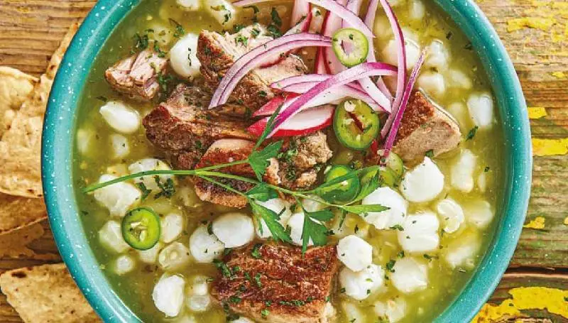

La Autentica Comida Tradicional
La Sabrosa
17/05/2022 Ofertas de otoño

pozole en verde
Esté es uno de los platillos más antiguos de la cocina mexicana, se consumía durante celebraciones prehispánicas en el Valle de México y la receta actual aparece en registros del siglo XVIII. Las distintas versiones de la receta en su mayoría surgen cuando esté platillo se difunde por el resto del país. Por ejemplo el pozole verde del centro de Guerrero usa el pozole blanco como base que después se pinta con una salsa de tomate, chiles verdes y pepitas. O el Pozole rojo de Jalisco y Michoacán que se colorea con chile ancho, guajillo, puya, de árbol o alguna combinación de estos.